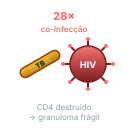

Vinte e oito vezes mais risco de adoecer. Toda pessoa com HIV recém-diagnosticada deve ser investigada pra ILTB. Tratar previne a forma ativa — e a coadministração com TARV tem detalhes que valem prova.

Mecanismo
Por que HIV+ tem risco 28× pra adoecer
HIV destrói linfócitos T CD4 → perda de imunidade celular Th1;
Macrófagos sem ajuda CD4 não mantêm granuloma íntegro — a estrutura que contém o bacilo desfaz-se;
Bacilo escapa, replica, dissemina → progressão de latente pra ativa;
Em HIV avançado (CD4 < 200): risco anual ~10 %/ano (vs ~0,1 %/ano em imunocompetente sem fator).
A perda da imunidade celular é o que muda o jogo. HIV não infecta o bacilo — ataca a estrutura imune que mantinha a infecção latente sob controle.
Conceito
Recomendação MS: investigar TODA PVHIV recém-diagnosticada
PPD ou IGRA na admissão da PVHIV ao serviço;
Em HIV+, o corte de PPD reator é ≥ 5 mm independentemente do contato — threshold mais sensível justificado pelo risco alto;
IGRA preferível quando PPD anérgico ou cross-reação BCG suspeita;
Em CD4 muito baixo, alguns protocolos indicam tratamento de ILTB independentemente do PPD/IGRA (anergia frequente) — verificar PCDT HIV-TB MS atual.
Decisão
Tratamento de ILTB em HIV+ — opções e atenções
3HP (rifapentina + isoniazida semanal × 3 m): opção possível, mas atenção a interações com TARV (ver alerta abaixo);
9H + piridoxina (B6) 25-50 mg/dia: alternativa quando 3HP é contraindicado por TARV — piridoxina obrigatória em HIV+ (grupo de risco pra neuropatia da isoniazida);
Iniciar TARV em paralelo com tratamento de ILTB — NÃO atrasar TARV (otimização imunológica é prioritária).
Alerta
Interações rifapentina × TARV
Rifapentina + efavirenz: redução de níveis plasmáticos do efavirenz — manejável com ajuste de dose ou troca de TARV;
Rifapentina + inibidores de protease (atazanavir/r, darunavir/r, lopinavir/r): interação significativa → geralmente contraindicação ou troca de TARV;
Rifapentina + dolutegravir (padrão BR atual): dolutegravir 50 mg 2×/dia em vez de 1×/dia, pra compensar indução enzimática.
Em qualquer combinação, a decisão exige co-condução com infectologia / serviço HIV referência.
Mecanismo
IRIS — Síndrome Inflamatória de Reconstituição Imune
Risco 8–43 % em HIV+ com CD4 muito baixo iniciando TARV. Manifesta-se 2 a 12 semanas após início da TARV.
Apresentação: piora paradoxal de TB (febre, linfadenopatia exuberante, infiltrados pulmonares aumentados, agravamento de TB meníngea conhecida);
Mecanismo: reconstituição imune com resposta inflamatória vigorosa a antígenos micobacterianos;
Timing TARV em PVHIV diagnosticada com TB ativa: iniciar TARV após 2 semanas de RIPE se CD4 < 50; após 8 semanas se CD4 ≥ 50 (timing nuançado conforme protocolo HIV-TB MS).
Recuperação ativa · 1
Por que HIV+ tem risco 28× pra adoecer com TB e qual o impacto no rastreio de ILTB nessa população?
Porque o HIV destrói linfócitos T CD4 → perda de imunidade celular Th1 → macrófagos sem ajuda CD4 não mantêm granuloma íntegro → bacilo escapa da contenção, replica e dissemina → progressão de latente pra ativa.
Em HIV avançado (CD4 < 200), o risco anual de progressão chega a ~10 %/ano — 100× mais que em adulto imunocompetente sem fator (~0,1 %/ano).
Impacto no rastreio:
Toda PVHIV recém-diagnosticada deve ser investigada pra ILTB com PPD/IGRA na admissão;
O corte de PPD reator é ≥ 5 mm independentemente do contato (threshold sensibilizado);
Em CD4 muito baixo, alguns protocolos indicam tratamento de ILTB independentemente do PPD/IGRA (anergia frequente).
Recuperação ativa · 2
Quais as interações importantes entre rifapentina (do 3HP) e TARV, e qual a alternativa quando 3HP é contraindicado?
Rifapentina é potente indutora enzimática (CYP3A4 e outros) — reduz níveis plasmáticos de vários antirretrovirais:
Efavirenz: redução de níveis → manejável com ajuste de dose ou troca de TARV;
Inibidores de protease (atazanavir/r, darunavir/r, lopinavir/r): interação significativa → geralmente contraindicação ou troca de TARV antes de iniciar 3HP;
Dolutegravir (padrão BR): manter 3HP é possível, mas dolutegravir 50 mg 2×/dia em vez de 1×/dia pra compensar indução.
Quando 3HP é contraindicado: alternativa é 9H + piridoxina 25-50 mg/dia. A piridoxina é obrigatória em HIV+ pra prevenir neuropatia da isoniazida (HIV é grupo de risco — referência cruzada A3).
Em qualquer cenário, decisão em conjunto com infectologia / serviço HIV de referência.